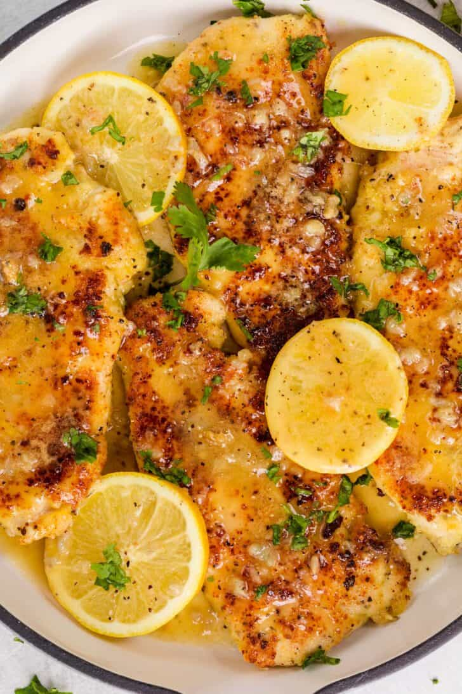

Lemon Chicken

Chicken generously coated with parmesan cheese and pan fried and smothered in lemon butter sauce.
A quick and easy pan fried chicken that's ready in 30 minutes for those busy week night dinners.
Ingredients
The Chicken
- 1.5 ld chicken breast
- 1 Tbsp olive oil
- 1 Tbsp parsley (optional)
- 1/2 lemon (optional)
The Egg Mixture
- 2 large eggs
- 1 garlic clove
- 1/2 tsp Italian seasoning
- 1/2 tsp salt
- 1/4 tsp ground black pepper
Breading Mixture
- 1 cup parmesan cheese
- 3 Tbsp all-purpose flour
Lemon Butter Sauce
- 8 Tbsp Butter
- 2 gloves of garlic
- 1/4 cup lemon juice
- 1/4 cup chicken broth
- 1/4 tsp ground black pepper
Instructions
- Cut the chicken breasts in half lengthwise. Lightly beat with a meat mallet until even in thickness.
- In a bowl, whisk together the ingredients for the egg mixture. In another bowl, combine the ingredients for the parmesan mixture.
Dip chicken into the egg mixture, then dredge chicken in the parmesan mixture. Allow any excess ingredients to fall off from each bowl.
- In a large skillet, heat enough oil to cover the bottom of a skillet. Once hot, add the chicken and cook 4-5 minutes per side,
or until crispy, golden and cooked through to 165˚F on an Instant Read Thermometer. Reduce the heat if chicken browns too quickly.
- Meanwhile, in a separate saucepan, melt butter and garlic, cook until fragrant. Add the chicken broth, lemon juice and pepper.
Allow the sauce to cook for about 2 minutes.Pour the sauce over the cooked chicken, turning to coat. Garnish with lemon slices and
finely chopped parsley if desired.